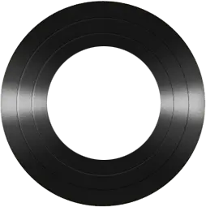

WeiYun Music
{{item.name || item.name}}
{{item.singer || (item.artists && item.artists[0] ? item.artists[0].name : '未知歌手')}}

{{currentMusic.name || '未播放歌曲'}}
{{currentMusic.singer || '未知歌手'}}
{{line.text}}
{{currentTimeText}}
{{durationText}}
此网站仅供学习交流，严禁用于商业用途
确定